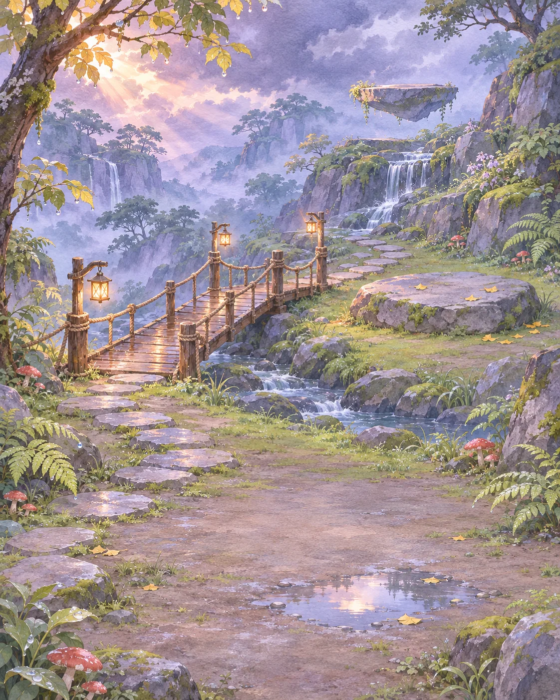
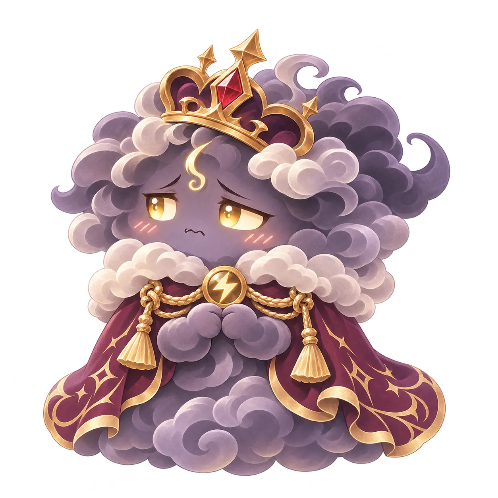
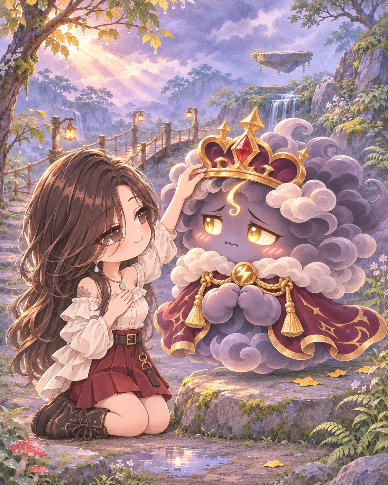
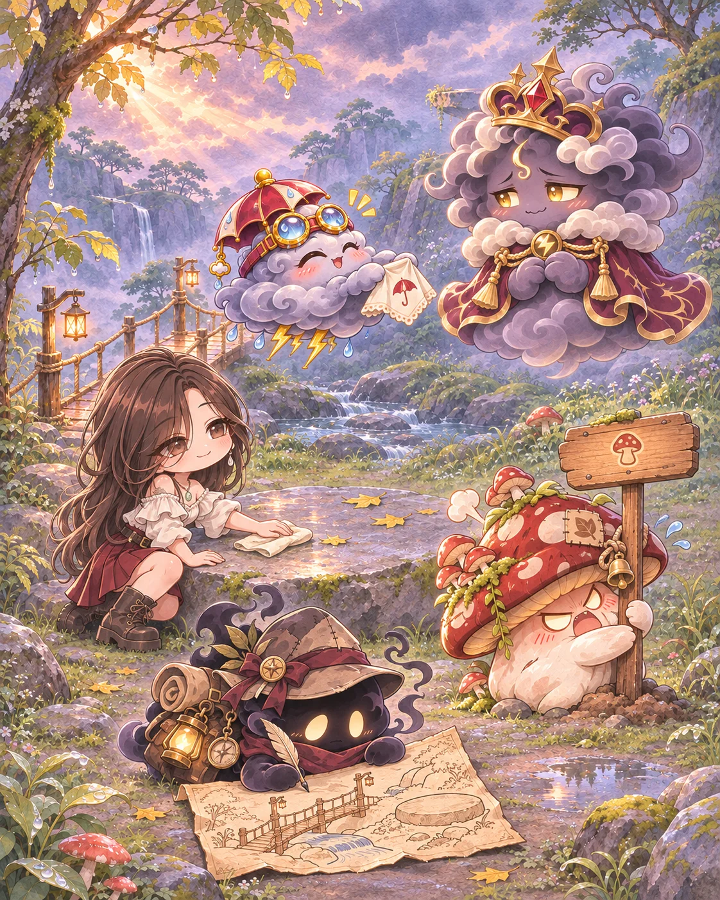
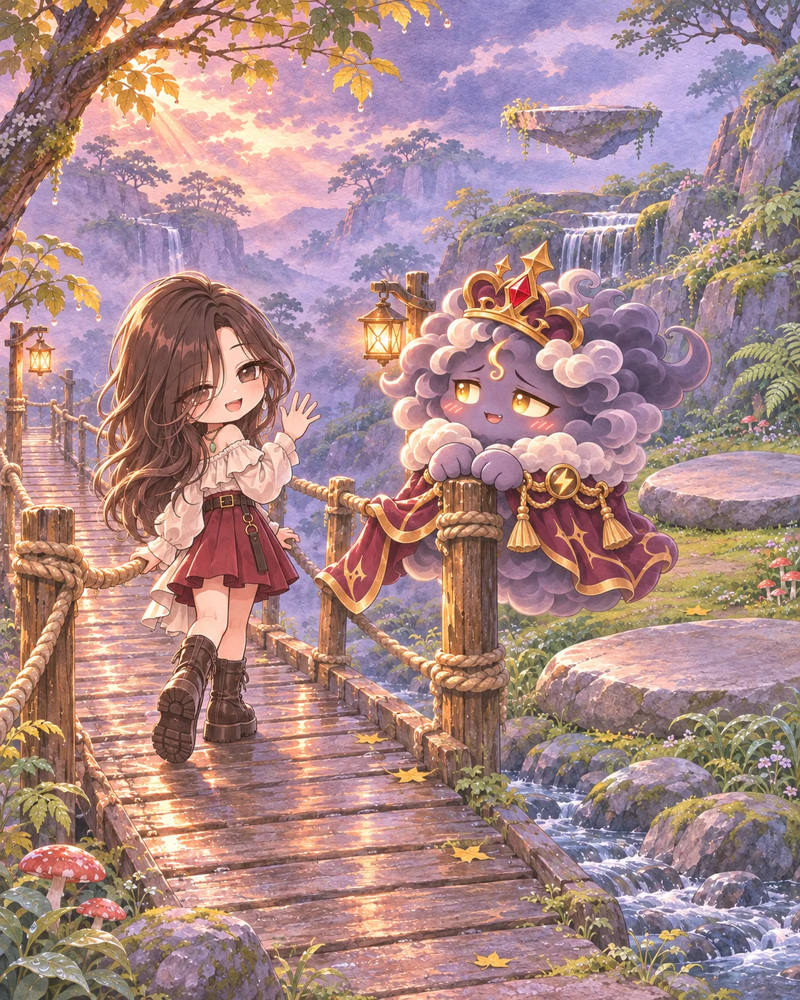
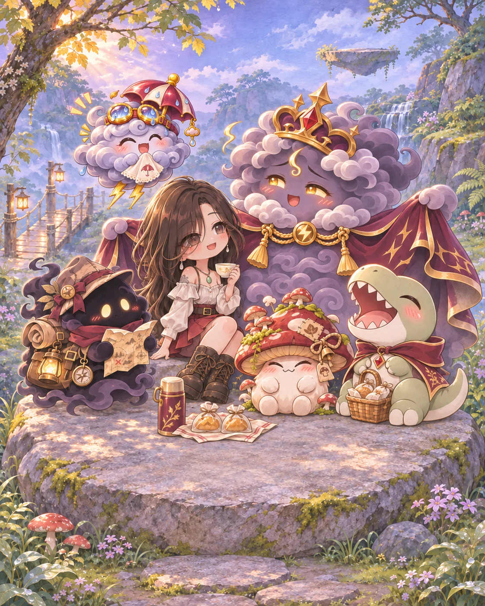
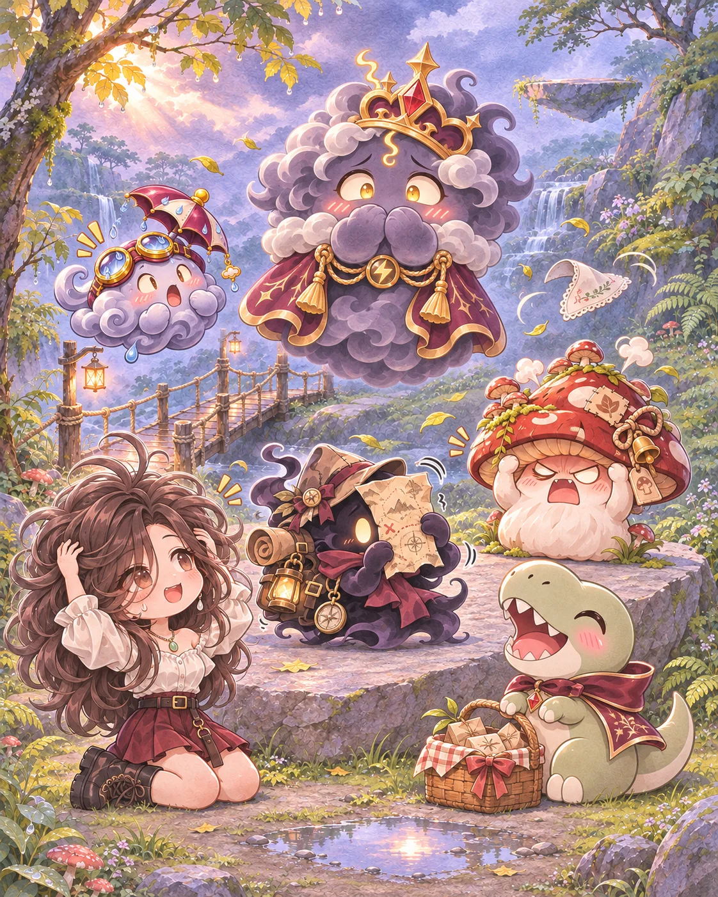

六幕故事＋片尾彩蛋的 7 張美術。從等人來的山谷，到朋友回來的午後。

前兩幕共用的空場景，保留吊橋、石頭座位與水窪，供角色和鏡頭演出。

獨立透明圖，可與山谷背景疊合，做飄浮、靠近與低幅搖晃。

「你現在想說什麼？」「……想找你們玩。」「嗯，聽見了。」

每位夥伴都有一件小任務。路牌保留蘑菇圖案，文字可在繪本中另行疊上。

「……不過，那塊看夕陽的石頭，本王會擦乾淨。」

這一天，雷聲很小。回應牠的聲音，卻有好多個。

「……本王只是太開心了。」「我知道！！但你先救一下我的帽子！！」